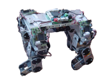

Pagina de Test
De WikiRobotics
__NOTITLE__

Esta es una página de prueba
| Web 1.0 | Web 2.0 |
|---|---|
| DoubleClick | Google AdSense |
| Ofoto | Flickr |
| Akamai | BitTorrent |
| mp3.com | Napster |
| Enciclopedia Británica | Wikipedia |
| webs personales | blogging |
| evite | upcoming.org y EVDB |
| especulación de nombres de dominios | optimización de los motores de búsqueda |
| páginas vistas | coste por clic |
| screen scraping | servicios web |
| publicar | participación |
| sistema de gestión de contenidos | wiki |
| directorios (taxonomía) | etiquetas (folcsonomía) |
| stickiness | sindicación |
Ejemplo 2.1 Programa Hola Mundo
//Ejemplo 2.1 - Programa Hola Mundo
class HolaMundo
{
static void Main()
{
string var="Mundo";
System.Console.WriteLine ("Hola {0}!", var);
}
}
Los primeros orbitales inferiores de átomos de hidrógeno mostradas como secciones transversales con código de color que muestra la probabilidad de densidad.
Archivo:PIC16 bootloader 1.2.hex
[hola]
<html> asdfas </html>
<google></google>
<youtube>o5idMjOk0DQ</youtube>
Contenido
[ocultar]Prueba de color
Texto en color
Ecuaciones
<math>22</math>
- <math>x^3y+4x-y=-2xy \,\!</math>
<math>x^3</math>
En construcción
| |
| |
Más pruebas

Imagenes con enlaces

{kind=link}
{kind=link}
- Reunión del 15-Abril-2011